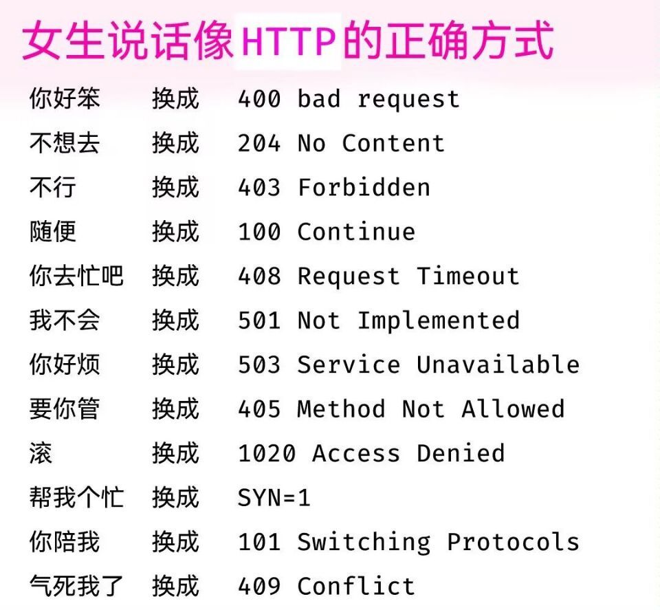

计网应用层笔记
最近在看计网自顶向下，那就找点计网的面试题/总结看看。 先来应用层的，应用层重点就是HTTP了吧，还有就是SSL/TLS相关的公钥加密（非对称加密）以及DNS。
DNS
DNS - Domain Name System，域名系统
域名，其实说白了就是给IP地址起得（便于人类记忆的）别名，域名系统就是负责这个转换过程的。而一般一个 IP 对应一台主机，所以域名也算是一种主机名。
hosts
说到这里不得不提一下 hosts 文件了。不管你是Windows、Linux还是Android、iOS,你的系统里都有一个 hosts 文件，这个文件里是一系列形如 IP 主机名 的对应列表（最有名的的应该就是localhost了）。当你访问主机名时，可以自动将其转换为 IP 地址，如果hosts中没有，再去DNS中查询。
所以呢，这个 DNS 就可以看作是大型的、分布式、特殊规范化的 hosts “文件”。（我自己说的，方便理解）
因为通过 hosts 能绕过 DNS 服务器的解析，所以前几年（大概我小学、初中时）这是访问 Google 等网站一个常用的绕过 “DNS 污染” 的方法。可惜现在技术早就升级了😁
域名解析
DNS查询有两种方式：递归和迭代。 DNS客户端设置使用的DNS服务器一般都是递归服务器，它负责全权处理客户端的DNS查询请求，直到返回最终结果。而DNS服务器之间一般采用迭代查询方式。
域名层次空间
域名系统中的任何名称都是域名。在域名系统的层次结构中，各种域名都隶属于域名系统根域的下级。 域名的第一级是顶级域，它包括通用顶级域，例如.com、.net和.org；以及国家和地区顶级域，例如.us、.cn和.tk等。顶级域名下一层是二级域名，一级一级地往下。
顶级域（TLD）
单独列一下顶级域。
- 基础结构域
只有一个
arpa，用于反向域名解析。有时被认为是通用顶级域 - 通用顶级域（gTLD）（共二十多个）
- 1985创立，共六个
.com、.edu、.gov、.mil、.net、.org - 2000年，新增
.aero、.biz、.coop、.info、.museum、.name、.pro（所以.name和.pro也算是老牌域名了） - 2005年，又公布一批
(包括
.xxx，但当时未启用)
- 1985创立，共六个
- 国家顶级域（ccTLD）
可看国家地区代码，基本遵守
ISO 3166-1两字母代码 - 新通用顶级域名（New gTLD）
2011 年 ICANN 理事会正式批准新通用顶级域名申请计划。
- 国际化域名（IDN）
使用特殊的文字或非拉丁字母组成，如
.中国。国际化域名使用Punycode转写储存，都以.xn--开头。
- 国际化域名（IDN）
使用特殊的文字或非拉丁字母组成，如
各顶级域域名数据数量统计：
WHOIS（域名数据库查询）
查询域名所有者。 可看 网络相关常用工具
HTTP - 超文本传输协议
无连接与无状态
使用 TCP 作为传输层协议，但是HTTP本身是无连接的，即交换HTTP报文前不用建立 HTTP 连接。
HTTP是无状态的，多次访问的响应应该相同。
HTTP 常用状态码
先来点有趣的。这里当然先是查一查我们亲爱的 MDN 啦：HTTP 响应状态码 - HTTP|MDN
状态码分类
- (100–199) 信息响应，表示目前是协议的中间状态，还需要后续请求
- (200–299) 成功响应
- (300–399) 重定向消息
- (400–499) 客户端错误响应
- (500–599) 服务端错误响应
常用状态码
- 101 切换请求协议，从 HTTP 切换到 WebSocket
- 200 请求成功，有响应体
- 301 永久重定向：会缓存，类似的还有 308
- 302 临时重定向：不会缓存，类似的还有 303、307
- 304 协商缓存命中
- 400 请求错误
- 403 服务器禁止访问
- 404 资源未找到
- 500 服务器端错误
- 503 服务器繁忙
前几个月看到的梗图: 
更多（梗图）：有哪些是程序员才懂的梗？然然然：HTTP状态码
连接管理
长连接与短连接（持久连接与非持久连接）
当浏览器访问一个包含多张图片的 HTML 页面时，除了请求访问 HTML 页面资源，还会请求其他网页元素对象（如图片资源）。如果每进行一次 HTTP 通信就要新建一个 TCP 连接，那么开销会很大。
长连接只需要建立一次 TCP 连接就能进行多次 HTTP 通信。
从 HTTP/1.1 开始默认是长连接的，如果要断开连接，需要由客户端或者服务器端提出断开，使用 Connection : close； 在 HTTP/1.1 之前默认是短连接的，如果需要使用长连接，则使用 Connection : Keep-Alive。
流水线与非流水线
持久连接又分为非流水线和流水线两种方式。
对于非流水线方式，客户在收到前一个响应后才能发出下一个请求，服务器发送完-一个对象后，其TCP连接就处于空闲状态，浪费了服务器资源。 而流水线方式下客户每遇到一个对象引用就立即发出一个请求，因而客户可以逐个地连续发出对各个引用对象的请求。这种方式减少了TCP连接中的空闲时间，提高了效率。
HTTP/1.1 的默认方式是使用流水线的持久连接。
HTTP1.0，1.1，2.0 的版本区别
HTTP/1.0
1996年5月，HTTP/1.0 版本发布，为了提高系统的效率，HTTP/1.0规定浏览器与服务器只保持短暂的连接，浏览器的每次请求都需要与服务器建立一个TCP连接，服务器完成请求处理后立即断开TCP连接，服务器不跟踪每个客户也不记录过去的请求。
HTTP/1.0中浏览器与服务器只保持短暂的连接，连接无法复用。也就是说每个TCP连接只能发送一个请求。发送数据完毕，连接就关闭，如果还要请求其他资源，就必须再新建一个连接。
TCP连接的建立需要三次握手，是很耗费时间的一个过程。所以，HTTP/1.0版本的性能比较差。
HTTP1.0 其实也可以强制开启长链接，例如接受Connection: keep-alive 这个字段，但是，这不是标准字段，不同实现的行为可能不一致，因此不是根本的解决办法。
HTTP/1.1
为了解决HTTP/1.0存在的缺陷，HTTP/1.1于1999年诞生。相比较于HTTP/1.0来说，最主要的改进就是引入了持久连接。所谓的持久连接即TCP连接默认不关闭，可以被多个请求复用。
客户端和服务器发现对方一段时间没有活动，就可以主动关闭连接。或者客户端在最后一个请求时，主动告诉服务端要关闭连接。
HTTP/1.1版还引入了管道机制（pipelining），即在同一个TCP连接里面，客户端可以同时发送多个请求。这样就进一步改进了HTTP协议的效率。
有了持久连接和管道，大大的提升了HTTP的效率。但是服务端还是顺序执行的，效率还有提升的空间。
HTTP/2
HTTP/2 是 HTTP 协议自 1999 年 HTTP 1.1 发布后的首个更新，主要基于 SPDY 协议。
HTTP/2 为了解决HTTP/1.1中仍然存在的效率问题，HTTP/2 采用了多路复用。即在一个连接里，客户端和浏览器都可以同时发送多个请求或回应，而且不用按照顺序一一对应。能这样做有一个前提，就是HTTP/2进行了二进制分帧，即 HTTP/2 会将所有传输的信息分割为更小的消息和帧（frame）,并对它们采用二进制格式的编码。而这个负责拆分、组装请求和二进制帧的一层就叫做二进制分帧层。
除此之外，还有一些其他的优化，比如做Header压缩、服务端推送等。
- Header压缩就是压缩对话。
- 服务端推送就是还没有收到浏览器的请求，服务器就把各种资源推送给浏览器（缓存）上。这样需要的时候就可以直接读取缓存了。
呃
目前，主流的HTTP协议是HTTP/2，部分为HTTP/1.1。
这让我想起来之前知乎看到的一个回答 浏览器开两个窗口分别访问百度，各自窗口会单独创建tcp连接吗，还是复用之前的tcp？ - 紫云飞 ，里面提到百度的主站是现在为数不多的HTTP/1.1了，看了看，确实。
HTTP 方法
HTTP 方法有哪些？
HTTP 定义了一组请求方法，以表明要对给定资源执行的操作。指示针对给定资源要执行的期望动作。
每一个请求方法都实现了不同的语义，但一些共同的特征由一组共享：例如一个请求方法可以是安全的、幂等的或可缓存的。
- GET 方法 请求一个指定资源的表示形式，使用 GET 的请求应该只被用于获取数据。(但当前网络中绝大部分使用的都是 GET)
- HEAD 方法 请求一个与 GET 请求的响应相同的响应，但没有响应体。
- POST 方法 用于将实体提交到指定的资源，通常导致在服务器上的状态变化或副作用。
- PUT 方法 用有效载荷请求替换目标资源的所有当前表示。(由于自身不带验证机制，任何人都可以上传文件，因此存在安全性问题，一般不使用该方法。)
- DELETE 方法 删除指定的资源。（与 PUT 功能相反，并且同样不带验证机制）
- CONNECT 方法 建立一个到由目标资源标识的服务器的隧道。随后使用 SSL 和 TLS 协议把通信内容加密后经网络隧道传输。
- OPTIONS 方法 用于描述目标资源的通信选项。（支持的方法）
- TRACE 方法 沿着到目标资源的路径执行一个消息环回测试。（追踪路径。发送请求时，在 Max-Forwards 首部字段中填入数值，每经过一个服务器就会减 1，当数值为 0 时就停止传输。）
- PATCH 方法 用于对资源应用部分修改。
POST和GET有哪些区别？各自应用场景？
使用场景
GET 用于获取资源，而 POST 用于传输实体主体。
参数
GET 和 POST 的请求都能使用额外的参数，但是 GET 的参数是以查询字符串出现在 URL 中，而 POST 的参数存储在实体主体中。不能因为 POST 参数存储在实体主体中就认为它的安全性更高，因为照样可以通过一些抓包工具（Fiddler）查看。
GET /test?name1=value1&name2=value2 HTTP/1.1POST /test HTTP/1.1
Host: example.com
name1=value1&name2=value2因为 URL 只支持 ASCII 码，因此 GET 的参数中如果存在中文等字符就需要先进行 URL 编码。例如 中文 会转换为 %E4%B8%AD%E6%96%87，而空格会转换为 %20。POST 参数支持标准字符集。
安全性
安全的 HTTP 方法不会改变服务器状态，也就是说它只是可读的。
GET 方法是安全的，而 POST 却不是，因为 POST 的目的是传送实体主体内容，这个内容可能是用户上传的表单数据，上传成功之后，服务器可能把这个数据存储到数据库中，因此状态也就发生了改变。
安全的方法除了 GET 之外还有：HEAD、OPTIONS。
不安全的方法除了 POST 之外还有 PUT、DELETE。
幂等性
幂等的 HTTP 方法，同样的请求被执行一次与连续执行多次的效果是一样的，服务器的状态也是一样的。换句话说就是，幂等方法不应该具有副作用（统计用途除外）。
所有的安全方法也都是幂等的。
在正确实现的条件下，GET，HEAD，PUT 和 DELETE 等方法都是幂等的，而 POST 方法不是。
GET /pageX HTTP/1.1 是幂等的，连续调用多次，客户端接收到的结果都是一样的：
GET /pageX HTTP/1.1
GET /pageX HTTP/1.1
GET /pageX HTTP/1.1
GET /pageX HTTP/1.1POST /add_row HTTP/1.1 不是幂等的，如果调用多次，就会增加多行记录：
POST /add_row HTTP/1.1 -> Adds a 1nd row
POST /add_row HTTP/1.1 -> Adds a 2nd row
POST /add_row HTTP/1.1 -> Adds a 3rd rowDELETE /idX/delete HTTP/1.1 是幂等的，即使不同的请求接收到的状态码不一样：
DELETE /idX/delete HTTP/1.1 -> Returns 200 if idX exists
DELETE /idX/delete HTTP/1.1 -> Returns 404 as it just got deleted
DELETE /idX/delete HTTP/1.1 -> Returns 404可缓存
如果要对响应进行缓存，需要满足以下条件：
请求报文的 HTTP 方法本身是可缓存的，包括 GET 和 HEAD，但是 PUT 和 DELETE 不可缓存，POST 在多数情况下不可缓存的。
响应报文的状态码是可缓存的，包括：200, 203, 204, 206, 300, 301, 404, 405, 410, 414, and 501。
响应报文的 Cache-Control 首部字段没有指定不进行缓存。
XMLHttpRequest
为了阐述 POST 和 GET 的另一个区别，需要先了解 XMLHttpRequest：
XMLHttpRequest 是一个 API，它为客户端提供了在客户端和服务器之间传输数据的功能。它提供了一个通过 URL 来获取数据的简单方式，并且不会使整个页面刷新。这使得网页只更新一部分页面而不会打扰到用户。XMLHttpRequest 在 AJAX 中被大量使用。
在使用 XMLHttpRequest 的 POST 方法时，浏览器会先发送 Header 再发送 Data。但并不是所有浏览器会这么做，例如火狐就不会。
而 GET 方法 Header 和 Data 会一起发送。
不想写了
收藏夹翻出来的，计网面试题都总结好了，怎么办，不想写了😭。